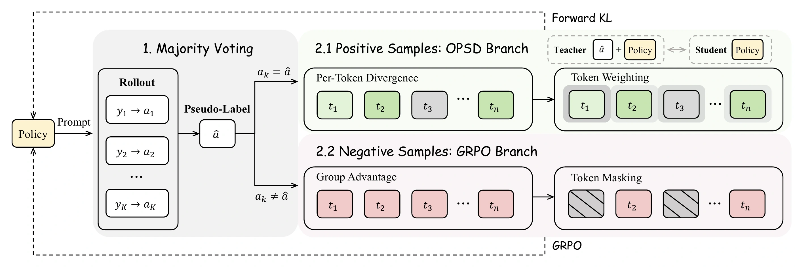
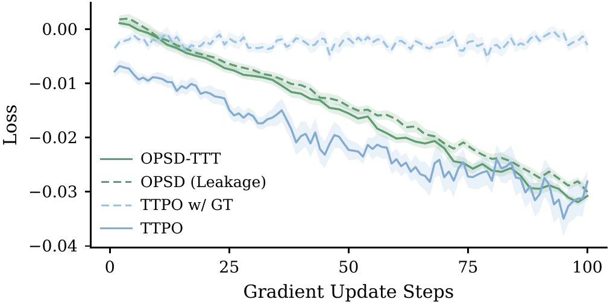
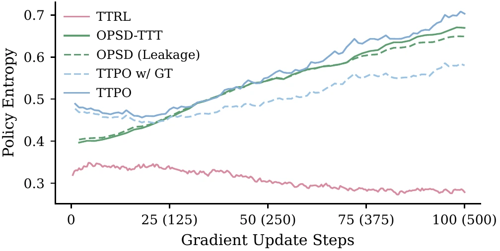
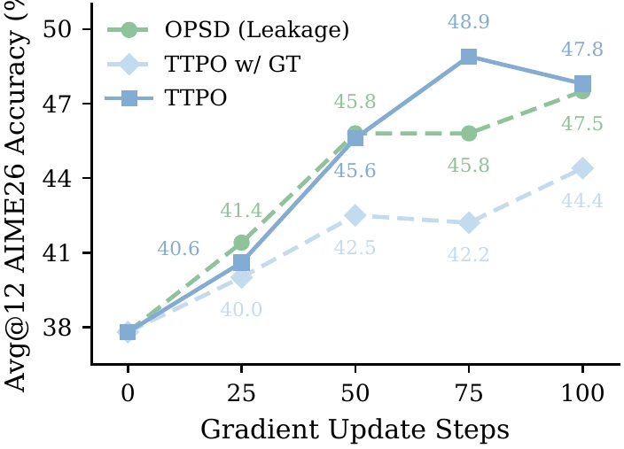
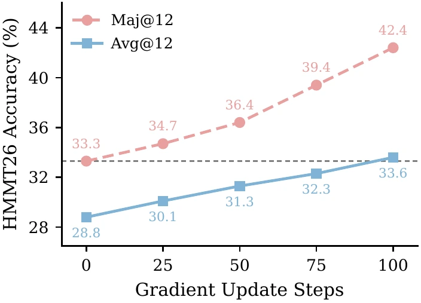
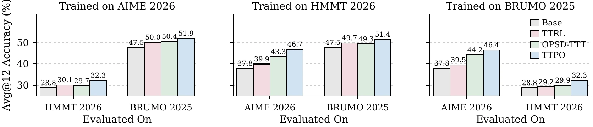

1. Majority Voting
Sample K trajectories, cluster equivalent answers, and use the largest cluster as the pseudo-label.
1Zhejiang University 2Alibaba Group
*Equal contribution. †Corresponding authors.
Recent prominent post-training methods, such as Reinforcement Learning (RL) and On-Policy Self-Distillation (OPSD), have driven rapid progress in mathematical reasoning for large language models, yet their reliance on ground-truth labels precludes test-time training (TTT). Replacing ground truth with majority-vote pseudo-labels is a natural alternative, yet it is fragile: an incorrect vote corrupts the teacher and misleads every token. We observe that this failure mode is asymmetric: rollouts that disagree with the pseudo-label are typically wrong regardless of whether the vote itself is correct.
Building on this observation, we propose Test-Time Policy Optimization (TTPO), an asymmetric objective that distills agreeing rollouts via OPSD and penalizes disagreeing rollouts with Grouped RL. Token-level selection further refines both branches: distillation down-weights already-converged positions, while RL penalizes only confident errors. Both updates remain well-grounded even under frequent pseudo-label errors, and majority-vote routing yields tighter self-supervision as the model improves. Without any labels, TTPO matches label-supervised OPSD on five competition-level benchmarks, raises Qwen3-1.7B from 38.0% to 45.2% in TTT, yields +25.2% to +36.4% without thinking, and shows strong cross-task generalization.
On difficult test problems, majority-vote pseudo-labels are wrong for roughly 85% of prompts. However, about 79% of the rollouts that disagree with a wrong pseudo-label are also wrong. This asymmetry makes disagreement a useful negative signal even when the voted answer itself is unreliable.
Treating every pseudo-label as a correct teacher would amplify its mistakes, while a single scalar reward discards the rich token-level information in promising trajectories. TTPO instead asks a narrower question: which supervision signal is trustworthy for each rollout? Agreement supports dense self-distillation; disagreement supports a conservative negative reward.
For each prompt, TTPO samples multiple solutions and extracts their final answers. A majority vote provides a temporary routing signal—not an assumed ground-truth label—so the model can learn from its own test-time rollouts without external annotations.

Sample K trajectories, cluster equivalent answers, and use the largest cluster as the pseudo-label.
Apply forward-KL self-distillation to agreeing rollouts. Token weighting emphasizes uncertain or teacher-divergent positions.
Apply grouped RL penalties to disagreeing rollouts. Token masking limits the update to confident errors and protects locally correct reasoning.
TTPO consistently outperforms label-free baselines and remains competitive with methods trained using ground-truth labels.
Avg@12 across five competition-level benchmarks.
† Uses ground-truth labels. TTPO is label-free.
| Method | AIME25 | HMMT25 | AIME26 | HMMT26 | BRUMO25 | Average |
|---|---|---|---|---|---|---|
| Qwen3-1.7B | ||||||
| Base | 36.9 | 21.9 | 37.8 | 28.8 | 47.5 | 34.6 |
| +GRPO† | 37.3 | 23.6 | 40.3 | 29.3 | 48.1 | 35.7 |
| +OPSD† | 40.3 | 28.1 | 46.4 | 31.4 | 52.5 | 39.7 |
| +TTPO | 41.7 | 26.1 | 46.5 | 31.6 | 54.7 | 40.1 |
| Qwen3-4B | ||||||
| Base | 66.1 | 41.9 | 65.8 | 42.4 | 64.0 | 56.0 |
| +GRPO† | 66.7 | 45.0 | 66.6 | 43.2 | 66.1 | 57.5 |
| +OPSD† | 68.3 | 44.2 | 68.1 | 44.4 | 67.2 | 58.4 |
| +TTPO | 69.4 | 43.6 | 68.1 | 44.7 | 67.2 | 58.6 |
| Qwen3-8B | ||||||
| Base | 66.7 | 44.2 | 67.5 | 45.5 | 69.2 | 58.6 |
| +GRPO† | 70.3 | 46.7 | 69.2 | 48.0 | 71.9 | 61.2 |
| +OPSD† | 70.8 | 46.4 | 72.5 | 47.2 | 71.4 | 61.7 |
| +TTPO | 71.4 | 46.1 | 74.2 | 48.0 | 73.1 | 62.6 |
TTPO reaches average scores of 40.1, 58.6, and 62.6 at the 1.7B, 4B, and 8B scales, respectively. Despite using only majority-vote pseudo-labels, it matches or exceeds ground-truth-supervised OPSD at every scale. The result indicates that the supervision source matters less than routing each sample to a signal that remains trustworthy under label noise.
Training directly on unlabeled test problems.
No method uses ground-truth labels.
| Method | AIME26 | HMMT26 | BRUMO25 | Average |
|---|---|---|---|---|
| Qwen3-1.7B | ||||
| Base | 37.8 | 28.8 | 47.5 | 38.0 |
| +TTRL | 39.2 | 30.6 | 50.9 | 40.2 |
| +OPSD-TTT | 44.7 | 30.3 | 50.8 | 41.9 |
| +TTPO | 48.9 | 33.6 | 53.1 | 45.2 |
| Qwen3-4B | ||||
| Base | 65.8 | 42.4 | 64.0 | 57.4 |
| +TTRL | 66.4 | 43.2 | 66.7 | 58.8 |
| +OPSD-TTT | 67.8 | 43.4 | 66.9 | 59.4 |
| +TTPO | 70.8 | 45.7 | 66.9 | 61.1 |
| Qwen3-8B | ||||
| Base | 67.5 | 45.5 | 69.2 | 60.7 |
| +TTRL | 70.8 | 48.0 | 70.1 | 63.0 |
| +OPSD-TTT | 71.7 | 47.2 | 72.2 | 63.7 |
| +TTPO | 73.9 | 48.5 | 73.6 | 65.3 |
In pure test-time training, Qwen3-1.7B improves from 38.0 to 45.2 Avg@12, outperforming TTRL by 5.0 points and OPSD-TTT by 3.3 points. The gains remain consistent at larger scales; notably, TTPO on Qwen3-4B reaches 61.1 and already exceeds the untrained Qwen3-8B model at 60.7.
OpenThoughts training; evaluation with thinking mode disabled.
† Uses ground-truth labels during training.
| Method | AIME25 | HMMT25 | AIME26 | HMMT26 | BRUMO25 | Average |
|---|---|---|---|---|---|---|
| Qwen3-1.7B | ||||||
| Base | 9.2 | 5.6 | 8.8 | 6.1 | 17.8 | 9.5 |
| +OPSD† | 16.9 | 9.2 | 19.4 | 11.9 | 25.6 | 16.6 |
| +TTPO | 39.2 | 20.6 | 39.8 | 26.3 | 47.5 | 34.7 |
| Qwen3-4B | ||||||
| Base | 22.2 | 12.5 | 19.4 | 17.2 | 28.3 | 19.9 |
| +OPSD† | 26.7 | 18.9 | 24.4 | 22.5 | 36.1 | 25.7 |
| +TTPO | 57.2 | 36.7 | 61.4 | 36.4 | 60.8 | 50.5 |
| Qwen3-8B | ||||||
| Base | 20.6 | 11.4 | 21.1 | 18.7 | 29.7 | 20.3 |
| +OPSD† | 25.0 | 14.2 | 22.2 | 19.9 | 37.8 | 23.8 |
| +TTPO | 67.8 | 42.5 | 65.0 | 41.2 | 67.2 | 56.7 |
Disabling thinking mode makes the transfer effect especially clear. TTPO improves the base averages by +25.2, +30.6, and +36.4 points across the three model scales, far beyond the gains from supervised OPSD (+7.1, +5.8, and +3.5). The positive branch transfers dense reasoning guidance, while the negative branch actively removes failure patterns from the student's own non-thinking distribution.
Beyond final accuracy, the training dynamics explain why majority-vote routing remains effective even though its pseudo-labels are frequently wrong.
Majority-vote routing keeps both branches active and produces a sustained optimization signal. In contrast, ground-truth routing often finds almost no matching positive rollouts on hard problems, starving the OPSD branch and shrinking group-relative advantages. TTPO also maintains substantially higher entropy than TTRL, preserving exploration instead of collapsing prematurely around a self-consistent answer.


Pseudo-labels are easier for the current model to match than difficult ground-truth answers, so they maintain a healthy positive-negative split and keep both objectives useful. As the policy improves, the rollouts used for voting improve too: the majority becomes more accurate, which raises the quality of the next training signal and creates a self-reinforcing improvement cycle.


TTPO is not simply memorizing the test problems used for adaptation. Training on AIME26, HMMT26, or BRUMO25 also improves performance on the other contests, indicating that the policy internalizes reusable reasoning behavior that transfers beyond the optimization set.

Majority voting does not need to identify the correct answer reliably. Even when the vote is wrong, most disagreeing rollouts are wrong as well, so penalizing their disagreement remains useful without trusting the pseudo-label's content.
Agreeing rollouts support dense, token-level distillation because the teacher is conditioned on the answer the rollout already produced. Disagreeing rollouts are safer to handle with a coarse RL penalty. TTPO's advantage comes from applying each signal only where its assumptions remain valid.
Hard ground-truth answers can leave almost no positive trajectories and weaken both branches. A vote always forms a reachable consensus, keeping training active; as the policy improves, better rollouts create better votes and progressively tighter self-supervision.
TTPO improves across model scales and transfers between competition benchmarks. The especially large gains when thinking mode is disabled show that the student internalizes useful reasoning behavior rather than relying only on longer inference traces.
@article{wang2026ttpo,
title = {TTPO: Test-Time Policy Optimization},
author = {Wang, Aozhe and Lu, Zhengxi and Wang, Jianze and Lv, Shangke and
Liu, Ying and Lu, Weiming and Xiao, Jun and Zhuang, Yueting and
Yang, Hua and Chen, Qianglong and Shen, Yongliang},
journal = {Preprint},
year = {2026}
}